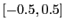
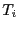
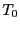
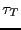
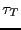
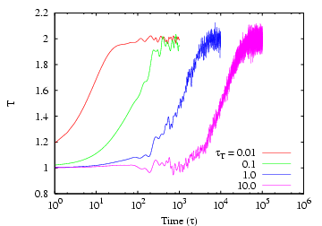

Next: Stochastic NVT Thermostats: Andersen,
Up: Molecular Dynamics at Constant
Previous: Molecular Dynamics at Constant
First, velocity scaling schemes do not strictly follow the canonical
ensemble, though in practice, the amount they deviate from canonical
is quite small. (This can be measured by comparing the velocity
distribution function with a Gaussian.) It is relatively easy to
implement the second class of schemes, because they can be ``dropped''
in to existing codes using almost any integrator. However, they
suffer the drawback that they are not time-reversible or
deterministic, properties that become important in some advanced MD
techniques. The third class are slightly more difficult to implement,
but do not suffer from such drawbacks as time-irreversibility.
We have in effect already encountered simple velocity scaling
in mdlj.c, in the initialization function. Here, particle
velocities are chosen randomly from  and the rescaled to
result in a desired temperature given by the relation:
We could, if we wanted to, turn this into a dynamic scheme for
continually keeping the velocities scaled such that the total kinetic
energy is constant. We can measure the instaneous temperature
immediately after a velocity update, and call it . Eq. 176
indicates that if we scale velocities by a constant  ,
where
,
where
we will be left with a system at temperature  . Velocity scaling to
maintain constant
. Velocity scaling to
maintain constant  is called an isokinetic
thermostat. Such a thermostat cannot be used to conduct a simulation
in the canonical ensemble, but is perfectly fine to use in a warmup or
initialization phase. We could perform velocity rescaling at every
step, or only every few steps. As a suggested exercise, modify mdlj.c to perform velocity scaling to a user-specified setpoint
temperature every
is called an isokinetic
thermostat. Such a thermostat cannot be used to conduct a simulation
in the canonical ensemble, but is perfectly fine to use in a warmup or
initialization phase. We could perform velocity rescaling at every
step, or only every few steps. As a suggested exercise, modify mdlj.c to perform velocity scaling to a user-specified setpoint
temperature every  time steps, where is a user-defined interval
between velocity scaling events. Begin with system at = 1.0, and
command it to jump to = 3.0 after 1,000 steps. How does the
system behave, and is it sensitive to your choice of ?
time steps, where is a user-defined interval
between velocity scaling events. Begin with system at = 1.0, and
command it to jump to = 3.0 after 1,000 steps. How does the
system behave, and is it sensitive to your choice of ?
Another popular velocity scaling thermostat is that of
Berendsen [10]. Here, the scale factor is given by
Here,  is the setpoint temperature,  is the integration
time step, and  is a constant called the ``rise time'' of the
thermostat. It describes the strength of the coupling of the system
to a hypothetical heat bath. The larger , the weaker the
coupling; in other words, the larger , the longer it takes
to achieve a given after an instantaneous change from some
previous . The code mdlj_ber.c
implements the Berendsen thermostat. As a brief exercise, you can
experiment with this code to get a feeling for how various values
of the rise time affect the response of the system when the setpoint
temperature is changed instantaneously from 1.0 to 2.0. Below is a lin-log
plot of just such an experiment with
is the integration
time step, and  is a constant called the ``rise time'' of the
thermostat. It describes the strength of the coupling of the system
to a hypothetical heat bath. The larger , the weaker the
coupling; in other words, the larger , the longer it takes
to achieve a given after an instantaneous change from some
previous . The code mdlj_ber.c
implements the Berendsen thermostat. As a brief exercise, you can
experiment with this code to get a feeling for how various values
of the rise time affect the response of the system when the setpoint
temperature is changed instantaneously from 1.0 to 2.0. Below is a lin-log
plot of just such an experiment with  = 256 particles at a density of 0.5.
Each curve corresponds to a different value of , and they
increase by factors of 10. The corresponding time at which
the setpoint is reached is also seen to increase by the same factor.
= 256 particles at a density of 0.5.
Each curve corresponds to a different value of , and they
increase by factors of 10. The corresponding time at which
the setpoint is reached is also seen to increase by the same factor.
|  |
Instantaneous temperature, , vs. time in an MD simulation
of 256 particles at a density of 0.5, with temperature controlled
by the Berendsen thermostat [ 10], for various
values of the thermostat ``rise time,'' .
|
|
Though relatively simple, velocity scaling thermostats are not
recommended for use in production MD runs because they do not strictly
conform to the canonical ensemble.
Next: Stochastic NVT Thermostats: Andersen,
Up: Molecular Dynamics at Constant
Previous: Molecular Dynamics at Constant
cfa22@drexel.edu